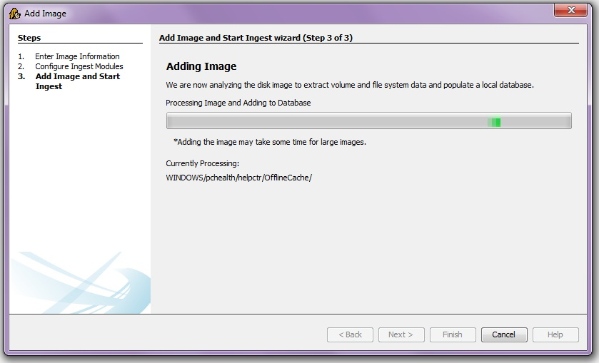

Adding An Image
There are two ways to add an image to the currently opened case:
- Go to "File" and select "Add Image..."
- Select the
 icon on the toolbar
icon on the toolbar
This will bring up the Add Image wizard. It will guide you through the process.
Here are some notes on what is going on during the process:
-
The first panel will ask you to browse for the image on your machine.
You will also need to specify the timezone that the disk image came from so that the dates and times can be properly displayed and converted.
As soon as you click 'Next >', Autopsy will begin analyzing the disk image and populating the database in the background.

-
The second panel allows you to choose which ingest modules to run on the image.
Refer to the Image Ingest part of the help guide for more details.

-
The third panel provides a progress bar and information about the image Autopsy is currently processing.
If small enough, the image may have already finished processing, allowing you to continue past this panel.
However, it may be necessary to wait for a short time while the database is populated.

-
Once the image finishes adding, the ingest modules you selected will automatically run in the background.
If the image is processed before you select ingest modules, Autopsy will wait until you have done so.
Note that Autopsy will store the path to the image in its configuration file.
If the image moves, then Autopsy will give an error because it can't find the image file.